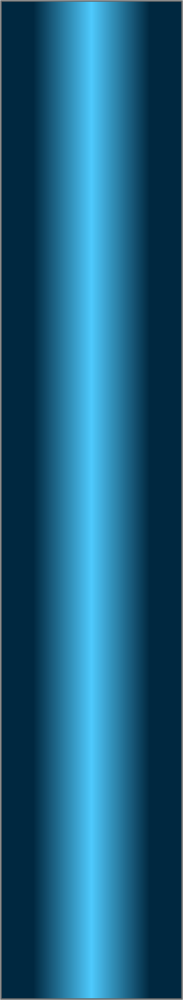
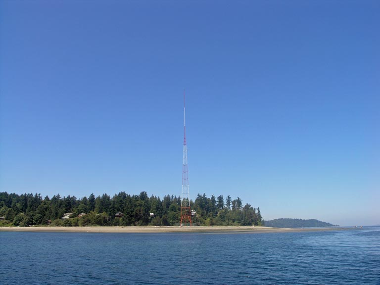
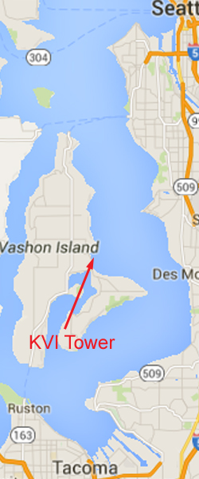
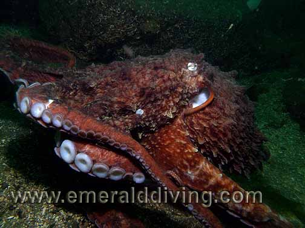
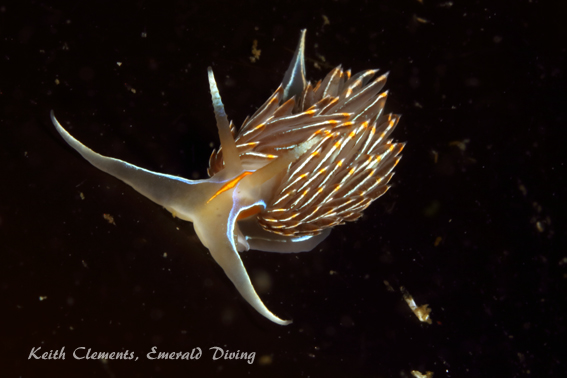
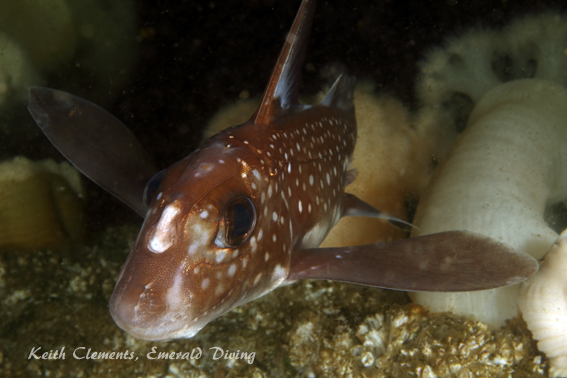

Double click to edit

KVI Tower
Topography: Expansive artificial reef composed of large boulders and concrete columns located on a moderately sloping sandy substrate. A small boat wreck lies on the eastern part of the reef.
Puget Sound marine life rating: 4
Puget Sound structure rating: 4
Diving depth: 70-115 feet
Highlight: Brown rockfish haven! High probability of seeing giant Pacific octopus tucked away in dens. Beautiful colonies of giant plumose. Excellent off-slack dive.
Skill level: Novice
GPS coordinates: N47° 25.194’ W122° 25.664’
Access by boat: The dive site is situated immediately south of Point Heyer on the east side of Vashon Island. Point Heyer is north of the intersection of Vashon and Maury Islands. The dive site is marked by a towering red and white radio beacon that I presume transmits for KVI radio. An expansive reef lies directly south of this tower. I find the shallowest section of the reef by keeping the large house perched on the bluff just to the right of the tower and anchoring in about 20 feet of water. As of December 2010, there is a "day use" diving mooring buoy conveniently located on the east reef in about 30 feet of water.
Shore access: The dive site is bordered by a public beach area on Vashon Island. My understanding is that it is a long walk from the closest parking area to the dive site. I do not believe there are any facilities at the public beach area. Getting to this site by land requires a ferry ride unless you live on Vashon or Maury Island.
Dive profile: This artificial reef is expansive. The KVI Tower Reef is predominately comprised of large boulders and has a much more natural look to it than other artificial reefs comprised of concrete rubble.
This is divided into two sections that are separated by up to 20 yards of sandy substrate. The western reef starts in about 50 feet of water and follows the sloping substrate down to about 115 feet. It is composed solely of very large boulders. The eastern reef starts in about 20 feet of water, but doesn’t go nearly as deep. It is predominately made of boulders, but also boasts huge concrete pilings lying on their sides like fallen trees. A sunken pleasure craft (about 25 feet long) is located on the far eastern reach of the reef in about 70 feet of water.
I start my dive on the western reef as it is the deeper of the two. Ending my dive on the eastern reef allows me to follow the reef to shallow depths to perform my safety stop. I descend to my desired deepest depth on the western reef and explore the area as I slowly head upslope to the east. I am careful to stay ahead of my no-deco schedule. I cross the sandy swath between the two reef sections in about 50-70 feet of water, then continue my slow ascent and explore the eastern reef. I especially enjoy the area where the columns are piled on top of one another - for some reason it makes me feel as if I am diving on a Greek ruin. Narcosis can be a wonderful thing.
Because this reef is located across Puget Sound from major rivers, visibility is often better here than at other nearby sites. I have had several dives with visibility in excess 50 feet. On the other hand, I have also done a few dives with less than seven feet of visibility. Poor visibility occurs when plankton is trapped against Point Heyer due to tides or strong south winds, or strong north winds result in waves pounding the sand bar immediately north of the dive site.
My preferred gas mix: EAN 31
Current observations:
Current Station: Admiralty Inlet
Noted Slack Corrections: None
I like to dive KVI Tower on light to moderate exchanges and do not concern myself with diving at slack. A slight surface current is normal. I have noted heavy current during the first half of major exchanges (greater than 2.0 knots maximum or more at Admiralty Inlet). The eastern reef is more susceptible to heavy current than the western reef. The current heads northeast over the top of the reef during an ebbing tide.
Boat Launch
· Redondo boat ramp (Redondo). Approximately 7 miles from the dive site. Docks are pulled from this launch during winter
months. A strong north wind can make it very difficult to launch or retrieve a boat from this ramp when the docks are absent.
· Don Armini boat ramp (West Seattle). Approximately 13 mile from the dive site.
Facilities: None
Hazards:
· Current: Light to moderate current is often present at this site. The shallows and east side of the reef are more susceptible to
current.
· Fishing boats: This site is a popular area to jig for bottom fish. Salmon fishermen sometimes troll through this area.
· Snagging hazard: Discarded fishing line and hooks are occasionally found throughout the site.
· Boat traffic: This site is a favorite dive site for both charters and private parties.
Marine life: The KVI Tower Reef offers excellent representation of Puget Sound marine species. Massive colonies of orange, white and even greenish-yellow plumose anemones add brilliant color to the rugged topography. Sprinkled amongst these giants are orange swimming anemones and red and green painted anemones.
This reef is one of my favorite places to find octopus. I have found up to 10 octopus on a single dive. By contrast, I have also had dives where I can’t find one. Many of the lairs are so deep and craggy that even a probing dive light can’t reveal a well hidden inhabitant. I have encountered mid-sized giant Pacific octopus in the open hunting for crabs on several occasions.
Rockfish thrive at this site, but tend to be small. Brown rockfish make up the overwhelming majority of the rockfish population, however copper and quillback rockfish are found in fair abundance. A small school of vermilion rockfish occasionally frequents the depths of the western reef.
Many of the long concrete pilings on the eastern reef are lined with anemones. I take a few minutes and examine the small holes bored into the ends of some of these pilings. Shrimp, gunnels, small sculpins, and warbonnets often occupy these holes and make for some excellent macro photography opportunities.
Ratfish, small lingcod, other greenling, shiner perch, striped seaperch, and pile perch round out the majority of the fish stocks. The depths of the western reef offer a chance to spy a glimpse of a red brotula. This shy fish hides in deep and narrow lairs. Nudibranch populations are not overly robust, but I often find beautiful white lined dironas, yellow Monterey dorids, orange spotted nudibranchs, and San Diego dorids with careful observation. The spotted aglajid is abundant in the shallows, as are tiny opalescent nudibranchs during certain times of the year (summer) when broadleaf kelp is present.
Puget Sound marine life rating: 4
Puget Sound structure rating: 4
Diving depth: 70-115 feet
Highlight: Brown rockfish haven! High probability of seeing giant Pacific octopus tucked away in dens. Beautiful colonies of giant plumose. Excellent off-slack dive.
Skill level: Novice
GPS coordinates: N47° 25.194’ W122° 25.664’
Access by boat: The dive site is situated immediately south of Point Heyer on the east side of Vashon Island. Point Heyer is north of the intersection of Vashon and Maury Islands. The dive site is marked by a towering red and white radio beacon that I presume transmits for KVI radio. An expansive reef lies directly south of this tower. I find the shallowest section of the reef by keeping the large house perched on the bluff just to the right of the tower and anchoring in about 20 feet of water. As of December 2010, there is a "day use" diving mooring buoy conveniently located on the east reef in about 30 feet of water.
Shore access: The dive site is bordered by a public beach area on Vashon Island. My understanding is that it is a long walk from the closest parking area to the dive site. I do not believe there are any facilities at the public beach area. Getting to this site by land requires a ferry ride unless you live on Vashon or Maury Island.
Dive profile: This artificial reef is expansive. The KVI Tower Reef is predominately comprised of large boulders and has a much more natural look to it than other artificial reefs comprised of concrete rubble.
This is divided into two sections that are separated by up to 20 yards of sandy substrate. The western reef starts in about 50 feet of water and follows the sloping substrate down to about 115 feet. It is composed solely of very large boulders. The eastern reef starts in about 20 feet of water, but doesn’t go nearly as deep. It is predominately made of boulders, but also boasts huge concrete pilings lying on their sides like fallen trees. A sunken pleasure craft (about 25 feet long) is located on the far eastern reach of the reef in about 70 feet of water.
I start my dive on the western reef as it is the deeper of the two. Ending my dive on the eastern reef allows me to follow the reef to shallow depths to perform my safety stop. I descend to my desired deepest depth on the western reef and explore the area as I slowly head upslope to the east. I am careful to stay ahead of my no-deco schedule. I cross the sandy swath between the two reef sections in about 50-70 feet of water, then continue my slow ascent and explore the eastern reef. I especially enjoy the area where the columns are piled on top of one another - for some reason it makes me feel as if I am diving on a Greek ruin. Narcosis can be a wonderful thing.
Because this reef is located across Puget Sound from major rivers, visibility is often better here than at other nearby sites. I have had several dives with visibility in excess 50 feet. On the other hand, I have also done a few dives with less than seven feet of visibility. Poor visibility occurs when plankton is trapped against Point Heyer due to tides or strong south winds, or strong north winds result in waves pounding the sand bar immediately north of the dive site.
My preferred gas mix: EAN 31
Current observations:
Current Station: Admiralty Inlet
Noted Slack Corrections: None
I like to dive KVI Tower on light to moderate exchanges and do not concern myself with diving at slack. A slight surface current is normal. I have noted heavy current during the first half of major exchanges (greater than 2.0 knots maximum or more at Admiralty Inlet). The eastern reef is more susceptible to heavy current than the western reef. The current heads northeast over the top of the reef during an ebbing tide.
Boat Launch
· Redondo boat ramp (Redondo). Approximately 7 miles from the dive site. Docks are pulled from this launch during winter
months. A strong north wind can make it very difficult to launch or retrieve a boat from this ramp when the docks are absent.
· Don Armini boat ramp (West Seattle). Approximately 13 mile from the dive site.
Facilities: None
Hazards:
· Current: Light to moderate current is often present at this site. The shallows and east side of the reef are more susceptible to
current.
· Fishing boats: This site is a popular area to jig for bottom fish. Salmon fishermen sometimes troll through this area.
· Snagging hazard: Discarded fishing line and hooks are occasionally found throughout the site.
· Boat traffic: This site is a favorite dive site for both charters and private parties.
Marine life: The KVI Tower Reef offers excellent representation of Puget Sound marine species. Massive colonies of orange, white and even greenish-yellow plumose anemones add brilliant color to the rugged topography. Sprinkled amongst these giants are orange swimming anemones and red and green painted anemones.
This reef is one of my favorite places to find octopus. I have found up to 10 octopus on a single dive. By contrast, I have also had dives where I can’t find one. Many of the lairs are so deep and craggy that even a probing dive light can’t reveal a well hidden inhabitant. I have encountered mid-sized giant Pacific octopus in the open hunting for crabs on several occasions.
Rockfish thrive at this site, but tend to be small. Brown rockfish make up the overwhelming majority of the rockfish population, however copper and quillback rockfish are found in fair abundance. A small school of vermilion rockfish occasionally frequents the depths of the western reef.
Many of the long concrete pilings on the eastern reef are lined with anemones. I take a few minutes and examine the small holes bored into the ends of some of these pilings. Shrimp, gunnels, small sculpins, and warbonnets often occupy these holes and make for some excellent macro photography opportunities.
Ratfish, small lingcod, other greenling, shiner perch, striped seaperch, and pile perch round out the majority of the fish stocks. The depths of the western reef offer a chance to spy a glimpse of a red brotula. This shy fish hides in deep and narrow lairs. Nudibranch populations are not overly robust, but I often find beautiful white lined dironas, yellow Monterey dorids, orange spotted nudibranchs, and San Diego dorids with careful observation. The spotted aglajid is abundant in the shallows, as are tiny opalescent nudibranchs during certain times of the year (summer) when broadleaf kelp is present.




Giant Pacific Octopus
Wolf Eel
Shaggy Mouse Nudibranch
Lion Nudibranch
Giant Plumose Anemone
Underwater imagery from this site


Brown Rockfish
Opalescent Nudibranch

Ratfish
Composite Photography From KVI Tower